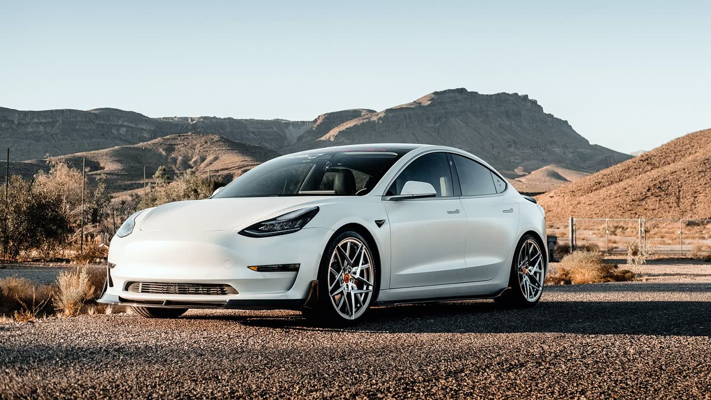

Antalya'da Güvenilir ve Şeffaf İkinci El Araç Deneyimi
Balkar Otomotiv olarak, araç alım ve takas süreçlerinizde samimiyeti ve dürüstlüğü ön planda tutuyoruz. İhtiyacınıza en uygun araca, soru işareti kalmadan ulaşmanız için buradayız.
★★★★★ 4.7 · 50 Google yorumu

